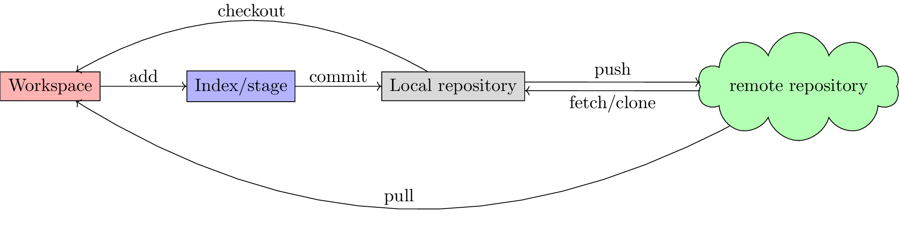

Git
Table of Contents
Introduction
Git is a famous and powerful open-source software for version control and management. It was developed by Linus Torvalds with C programing language. What is different from subversion, git adopts a completely distributed manner. Regarding its utilization, besides its built-in manual, there is also an excellent book, Pro Git, which can be obtained for free1. This post just summarizes the preliminary usage of git, which is referred from the book.
Objects
In git, there are 3 types of objects defined, blob, tree, and commit. In order to view its properties, a dedicated command git cat-file is provided. Its type and content can be returned with option -t and -p respectively.
- A blob keeps the content of a binary compressed file.
- A tree represents a directory, including its hierarchy, permission, and the names of its componential files.
- A commit is essentially a SHA-1 hash.
A branch or a tag is nothing but a pointer pointing at the SHA-1 hash of a commit. Moreover, HEAD is also a pointer, which always points the active branch at the time.
Areas
In the utilization of git, there are four important areas for storage, workspace, index (or stage), repository and remote. Their relationship can be illustrated by Figure 1.

Figure 1: Work flow of git
Installation
On Unix/Linux operation systems, git can be easily installed. Taking ArchLinux for instance, git can be installed via following command.
pacman -S git
In order to enable bash-like auto completion, add following entry to ~/.bashrc
source /usr/share/git/completion/git-completion.bash
For GUI, package tk needs to be installed additionally.
pacman -S tk
Configuration
Command git config can define the default preference or behavior of git. There are several files this command will read from and write to so we can set values globally or repository-specifically.
- List the per-repository/per-user/system-wide configuration.
git config --list [--global/--system]
- Per-repository/per-user/system-wide configuration
git config -e [--global/--system] git config [--global/--system] user.name "NAME" git config [--global/--system] user.email "EMAIL@COMPANY.COM"
- Store password to avoid repeated password input.
git config [--global/--system] credential.helper store
- Define default editor.
git config [--global/--system] core.editor "emacs -nw"
Usage
Create repositories
- Create an empty repository (
git initcan also reinitialize an existing repository).
git init /PATH/TO/REPOSITORY
- Initialize the current directory as a repository.
git init
- Download from a remote repository. Option
--barecan be used for a repository without workspace.
git clone [--bare] /PATH/TO/REPOSITORY.git git clone [--bare] file:///PATH/TO/REPOSITORY.git git clone [--bare] http://SERVER:PORT/PATH/TO/REPOSITORY.git git clone [--bare] https://SERVER:PORT/PATH/TO/REPOSITORY.git git clone [--bare] USER@SERVER:/PATH/TO/REPOSITORY.git
Basic snapshotting
Add file(s)
- Add the content from the workspace into index area for the next commit.
git add FILE1 [FILE2] git add DIRECTORY
- Add the revisions for the already tracked files.
git add -u
Remove file(s)
- Stop tracking file(s).
git rm --cached FILE1 [FILE2]
- Remove file(s) in workspace and index the removal in index.
git rm FILE1 [FILE2]
Commit the revision(s)
The commands take the all/or the specific file(s) that have been staged with git add and record a new permanent snapshot in the repository and then moves the branch pointer on the current branch up to it.
- Commit all the files in the index.
git commit [-m MESSAGE]
- Commit specific file(s) in the index.
git commit FILE1 [FILE2] [-m MESSAGE]
- Replace the last commit with the new commit. If no changes for the codes compared to the last commit, only commit message will be updated.
git commit --amend [-m MESSAGE] git commit --amend [FILE]
Branch operations
- List all the local/remote branches.
git branch [-r]
- List all the branches including both local and remote ones.
git branch -a
- Create a new branch pointing to a given commit. If not provided, the initial pointing of the new branch is
HEAD.
git branch BRANCH_NAME [COMMIT_NAME]
- Switch to an existing branch.
git checkout BRANCH_NAME
- Create a new branch and switch to it.
git checkout -b BRANCH_NAME [REMOTE_NAME/REMOTE_BRANCH_NAME]
- Associate a local branch to a remote branch.
git branch --set-upstream LOCAL_BRANCH_NAME REMOTE_NAME/REMOTE_BRANCH_NAME
- Create a new branch and associate it to a remote branch.
git branch --track BRANCH_NAME REMOTE_NAME/REMOTE_BRANCH_NAME git fetch remote_name remote_branch_name:branch_name
- Merge a given branch into the current branch.
git merge -m MESSAGE BRANCH_NAME
Git labels the difference between branches, e.g.,
... <<<<<<< HEAD ABCDEFG ======= abcdefg >>>>>>> branch_name ...
In this case, manual merge (edit) is necessary. After that, add the merged files into index area (git add) and commit them (git commit). At the stage of merge, if possible, git always tries to merge branches using fast forward by default. However, it can be disabled by option --no-ff, i.e.,
git merge [--no-ff] BRANCH_NAME
Clearly, git merge will keep the history of a series of commits and produce a new commit; while git rebase will guarantee a linear commit history without generating any new commits.
Cherry-pick can pick/merge the revisions of one or more commits into the current branch.
git cherry-pick COMMIT_HASH
Rebase is another operation to merge branch, which moves the revisions in the current branch to a target branch. Compared to
merge,rebasehas linear and clear commit history.git rebase BRANCH_NAME
- Remove a local branch.
git branch -d BRANCH_NAME
- Remove a local (not merged) branch forcely.
git branch -D BRANCH_NAME
- Remove a remote branch.
git push origin --delete BRANCH_NAME git branch -dr REMOTE_NAME/BRANCH_NAME
Rebase
Taking rebasing the current branch, e.g. BRANCH_NAME, onto a target, e.g. master branch, for instance, a basic work flow for git rebase can be listed as follows.
# Switch to branch BRANCH_NAME. git checkout BRANCH_NAME # Rebase the related commits onto master branch. git rebase master # For any conflicts, several cycles of following steps are indispensable. # 1) Resolve the conflicts manually. # 2) Add the revised files by "git add". # 3) Continue the rebasing operation by "git rebase --continue" until all the conflicts resolved. # Switch back to master branch. git checkout master # Merge BRANCH_NAME into master in a fast-forward way. git merge BRANCH_NAME
An interactive interface is available if option -i is given whereby a variety of operations can be completed, e.g., pick, reword, edit, squash, fixup, exec, drop.
git rebase -i PARENT_OF_EARLIEST_COMMIT_INVOLVED
| Command | Operation |
|---|---|
pick |
Add a commit without any modification. |
squash |
Combine multiple commits into a single one with a new commit message. |
fixup |
Combine multiple commits into a single one but keeping the commit message. |
edit |
Add more changes to an existing commit. |
reword |
Change the commit message only. |
drop |
Delete a commit. |
Tag operations
- List all tags.
git tag
- Create a new tag for a commit. If not provided, the tag is labeled on
HEAD.
git tag TAG_NAME COMMIT_NAME
- Remove a tag.
git tag -d TAG_NAME
- Remove a remote tag.
git tag -d TAG_NAME git push origin :refs/tags/TAG_NAME
- Show information of a tag.
git show TAG_NAME
- Commit a tag.
git push REMOTE_NAME TAG_NAME
- Commit all tags.
git push REMOTE_NAME --tags
- Create a new branch pointing to a tag.
git checkout -b BRANCH_NAME TAG_NAME
Information query
- Show revised file(s) in workspace compared to those in index.
git status
- Show the revisions in a commit.
git show COMMIT_NAME
- Show the history of current branch (option
--statcan list the revised files, and option--graphcan show the merging of branches).
git log [--stat] [--graph]
- List the command record.
git reflog
- Show the modifier and time of a file.
git blame FILE_NAME
Show the difference
- Show the difference between the workspace and the index.
git diff
- Show the difference between the index and
HEAD.
git diff --cached/--staged
- Show the difference between two commits.
git diff COMMIT1 COMMIT2
Remote operation
- List all the remote repositories.
git remote [-v]
- Show the information of a remote repository.
git remote show REMOTE_NAME
- Add a remote repository.
git remote add REMOTE_ALIAS REMOTE_URL
- Remove a remote repository.
git remote remove REMOTE_ALIAS
- Download all the commit records from a remote repository.
git fetch REMOTE_NAME
- Download all the commit records from a remote repository and merge it into the current local branch. In this sense,
git pull = git fetch + git merge.
git pull REMOTE_NAME REMOTE_BRANCH_NAME
- Download all the commit records from a remote repository and rebase the current local branch onto it. Similarly,
git pull --rebase = git fetch + git rebase.
git pull --rebase REMOTE_NAME REMOTE_BRANCH_NAME
- Upload the local branch to a remote repository. If not provided, it will push to
masteroforigin.
git push REMOTE_NAME REMOTE_BRANCH_NAME
- Upload all the local branches to a remote repository.
git push REMOTE_NAME --all
Undo operation
- Recover the workspace from index.
git checkout -- [FILE]
- Recover the workspace from a commit.
git checkout COMMIT_NAME [FILE]
- Recover index from a commit.
git reset COMMIT_NAME
- Recover index and workspace from a commit.
git reset --hard COMMIT_NAME
- Move pointer
HEADto a commit.
git reset --keep COMMIT_NAME
Temporary switch
- Buffer the workspace temporarily.
git stash
- List the buffered workspace.
git stash list
- Recover the buffered workspace.
git stash apply
- Remove the buffer or the buffered workspace.
git stash drop
- Recover the buffered workspace and remove the buffer.
git stash pop
Submodule
As its name implies, a submodule is a relatively independent feature which can be imported from another repository. The information relating to a submodule is scattered in following 3 places.
- File
.gitmodules
[submodule "/PATH/TO/SUBMODULE"]
path = PATH/TO/SUBMODULE
url = SUBMODULE_REPOSITORY_URL
branch = BRANCH_NAME
- File
.git/config
[submodule "/PATH/TO/SUBMODULE"]
url = SUBMODULE_REPOSITORY_URL
- Directory
.git/modules/PATH/TO/SUBMODULE
Moreover, a submodule can further consist of one or more subsubmodule(s). A recursive operation can be performed by option --recursive.
Usage
Add a submodule to the current repository, with
/PATH/TO/SUBMODULEas the relative location for the submodule, andSUBMODULE_NAMEas its name.git submodule add [-b|--branch BRANCH_NAME] [-f|--force] [--name SUBMODULE_NAME] [--depth N] SUBMODULE_REPOSITORY_URL /PATH/TO/SUBMODULE
Register an added submodule, i.e., add a new section in
.git/configusing the corresponding section in.gitmodulesas a template. For each registered submodule, further calls togit submodule update/foreach/syncapply.git submodule init /PATH/TO/SUBMODULE
Update one or all registered submodule(s).
git submodule update [--init] [--checkout/rebase/merge] [--remote] [/PATH/TO/SUBMODULE]
where
--initperformsgit submodule initfor each uninitialized submodule before update.--checkout/rebase/mergeindicates the behavior for the update.--checkoutis the default behavior, which checks out the commit recorded in the belonging repository on a detached HEAD in the submodule.--rebaserebases the submodule's remote-tracking branch onto the commit recorded in the belonging repository.--mergemerges the commit recorded in the belonging repository into the submodule's remote-tracking branch.
--remoteuses the status of the submodule's remote-tracking branch instead of the SHA-1 recorded in the belonging repository. In this case, its behavior is--mergein the last option, equivalent to rungit pullin the target submodule(s).
Show the status of a submodule. E.g., prefix
-indicates an uninitialized submodule; prefix+means that the submodule commit currently checked out does not match the SHA-1 found in the index of the belonging repository; prefixUimplies merge conflicts.git submodule status [/PATH/TO/SUBMODULE]
Unregister a registered submodule, i.e., remove the corresponding section from
.git/configas well as the work tree. For a unregistered submodule, further calls togit submodule update/foreach/syncwill skip.git submodule deinit [-f|--force] /PATH/TO/SUBMODULE
All the submodules can be unregistered by
git submodule deinit [-f|--force] --all
Remove a submodule from the current repository.
git submodule deinit -f /PATH/TO/SUBMODULE rm -fr .git/modules/PATH/TO/SUBMODULE git rm -f /PATH/TO/SUBMODULE
Evaluate an arbitrary shell command in each checked out submodule.
git submodule foreach COMMAND